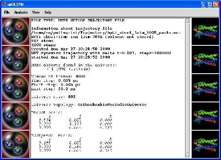

Next: The File menu
Up: nMOLDYN_for_HTML
Previous: nMOLDYN input files
Contents
Using nMOLDYNfrom the Graphical User Interface
Through the nMOLDYN graphical user interface, you will usually open a trajectory, then specify the parameters
for the analysis you wish to perform and finally start the calculation itself. But you can also perform some other
actions such as plotting the results of an analysis, performing some file conversions ...The graphical interface gives
access to most of the functionalities of nMOLDYN.
Moreover, from the graphical user interface it is possible to create an input file for the command-line interface or an
autostart analysis python script. Both kind of files provide a convenient starting point to set up and run new analysis direclty
from the command-line interface (see Section 5).
To run nMOLDYN from the GUI, type the following command line:
python-dir/bin/nMOLDYNStart.py on unix
or
python-dir\Scripts\nMOLDYNStart.py on Windows
python-dir being the prefix of your python distribution. The command line accepts some arguments that can
change how nMOLDYN will start. The following arguments are currently supported by nMOLDYN:
- -h/-help
Format: not an editable argument
Value: None
Description: displays the details of the command line arguments. Will not start nMOLDYN in GUI mode.
- -version
Format: not an editable argument
Value: None
Description: displays the version of nMOLDYN. Will not start nMOLDYN in GUI mode.
- -n/-netcdf=
Format: string
Value: filename
Description: starts nMOLDYN from the graphical user interface loading directly the filename NetCDF file.
- -i/-input=
Format: string
Value: filename
Description: runs an analysis with the command-line interface using filename nMOLDYN input file (see
Section 5.2 for details). Will not start nMOLDYN in GUI mode.
- -c/-contents=
Format: string
Value: filename molname selkwd
Description: if file provided, displays the contents of the trajectory file file. If
file and molname provided displays the selection keywords associated to molname. If
file and molname and selkwd provided displays the selection values associated to selection
keyword selkwd. Will not start nMOLDYN in GUI mode.
- -t/-test=
Format: string
Value: testname
Description: runs one or several analysis benchmarks Will not start the GUI. The format for
testname string is
test1,test2,...
where test1, test2 ...are the name of benchmark 1, 2 ...
(see Section 4.4.4 for a comprehensive list of the available benchmarks).
- -acroread_path=
Format: string
Value: filename
Description: sets the path for Acrobat Reader executable to filename. It will overide the preferences settings.
- -vmd_path=
Format: string
Value: filename
Description: sets the path for VMD executable to filename. It will overide the preferences settings.
- -documentation_style=
Format: string
Value: html or pdf
Description: sets the format for the online documentation either to HTML (html) either to pdf
(pdf). It will overide the preferences settings.
- -ncdump_path=
Format: string
Value: filename
Description: sets the path for ncdump executable to filename. It will overide the preferences
settings.
- -ncgen_path=
Format: string
Value: filename
Description: sets the path for ncgen executable to filename. It will overide the preferences
settings.
- -outputfile_path=
Format: string
Value: dirname
Description: sets the directory where all the output files will be written to dirname. It will overide the
preferences settings.
- -trajfile_path=
Format: string
Value: dirname
Description: sets the default MMTK trajectory input files directory search path to dirname. It will
overide the preferences settings.
- -warning_acroread=
Format: string
Value: yes or no
Description: if set to yes, will warn you if acrobat reader is not found on your system. It will
overide the preferences settings.
- -warning_ncdump=
Format: string
Value: yes or no
Description: if set to yes, will warn you if ncdump program is not found on your system. It will
overide the preferences settings.
- -warning_ncgen=
Format: string
Value: yes or no
Description: if set to yes, will warn you if ncgen program is not found on your system. It will
overide the preferences settings.
- -warning_vmd=
Format: string
Value: yes or no
Description: if set to yes, will warn you if VMD program is not found on your system. It will
overide the preferences settings.
- -progress_rate=
Format: integer in [0,100]
Value: prog_rate
Description: displays the progress of the analysis every prog_rate percents. It will overide the
preferences settings.
When starting nMOLDYN from the GUI, the start-up window shown in figure 4.1 will pop up. This window contains
four drop down menu buttons,
and a text window.
Figure 4.1:
The nMOLDYN main window.
|

|
Everything concerning IO manipulations are done via the drop down menu button File.
The drop down menu buttons Analysis allows to set up and start the analysis you are interested in.
The View and Help buttons allow one to inspect input/output data and ask for help
respectively. All of these menus will be described below.Finally, the text window will display all the information
concerning the loaded file and the main actions performed on it.
Subsections
Next: The File menu
Up: nMOLDYN_for_HTML
Previous: nMOLDYN input files
Contents
pellegrini eric
2009-10-06